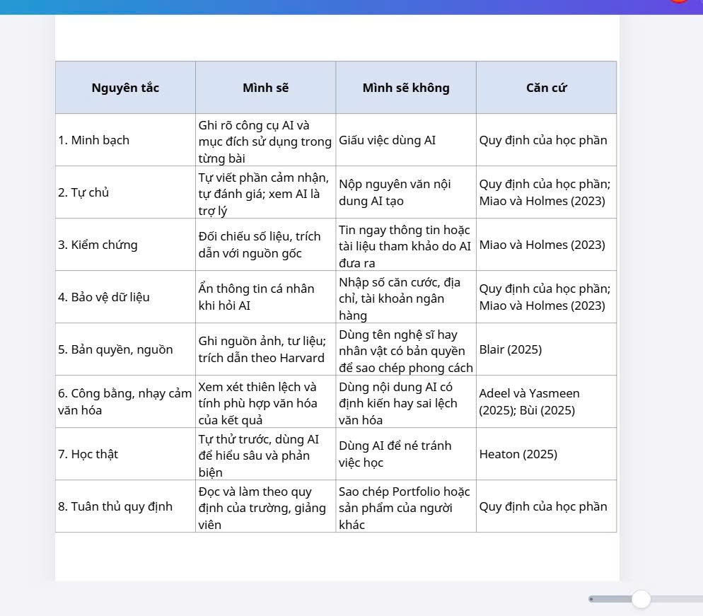

Bài 6 · Chương 6: An toàn và liêm chính học thuật trong môi trường số · Điểm tối đa 0,5
Bài 6: Sử dụng AI có trách nhiệm trong học tập và nghiên cứu
a) Mục tiêu bài tập
Yêu cầu của bài tập: xây dựng bộ nguyên tắc cá nhân về sử dụng AI có trách nhiệm trong học tập và nghiên cứu, dựa trên các nghiên cứu và hướng dẫn đã tìm hiểu.
Kỹ năng và năng lực được rèn luyện: nhận diện rủi ro (thông tin sai lệch, thiên lệch, bản quyền, quyền riêng tư), tuân thủ liêm chính học thuật, tự chịu trách nhiệm với sản phẩm học tập.
b) Tóm tắt quá trình thực hiện
Các bước thực hiện
- Đọc lại các nguồn hạng A và B ở Bài 2, rút ra các rủi ro và khuyến nghị chính.
- Đối chiếu với quy định của học phần về việc dùng AI, bản quyền và thông tin cá nhân.
- Nhóm các ý thành nhóm nguyên tắc; mỗi nguyên tắc có hai vế: "Mình sẽ" và "Mình sẽ không".
- Rà soát tính khả thi và rút gọn thành 8 nguyên tắc dễ nhớ.
- Tạo bảng tự kiểm tra trước khi nộp bài.
Công cụ đã sử dụng
- Tài liệu UNESCO và các bài báo ở Bài 2
- Quy định về sử dụng AI trong đề thi học phần
- ChatGPT: hỗ trợ gợi ý cách diễn đạt các nguyên tắc
Khó khăn và cách giải quyết
| Khó khăn | Cách giải quyết |
|---|---|
| Ranh giới giữa "hỗ trợ" và "làm hộ" chưa rõ ràng. | Đặt tiêu chí: mình phải hiểu và giải thích lại được sản phẩm; nếu không, mình chưa được phép nộp. |
| Nhiều khuyến nghị quốc tế còn chung chung. | Chuyển thành hành động cụ thể áp dụng được ngay trong học phần. |
Khai báo sử dụng AI: Mình dùng ChatGPT để gợi ý cách diễn đạt và sắp xếp các nguyên tắc. Mình tự đọc các nguồn ở Bài 2, chọn và chỉnh sửa từng nguyên tắc cho phù hợp với bản thân, đồng thời tự làm bảng tự kiểm tra.
c) Sản phẩm cuối cùng
a) Bộ 8 nguyên tắc sử dụng AI có trách nhiệm của mình
| Nguyên tắc | Mình sẽ | Mình sẽ không | Căn cứ |
|---|---|---|---|
| 1. Minh bạch | Ghi rõ công cụ AI và mục đích sử dụng trong từng bài | Giấu việc dùng AI | Quy định của học phần |
| 2. Tự chủ | Tự viết phần cảm nhận, tự đánh giá; xem AI là trợ lý | Nộp nguyên văn nội dung AI tạo | Quy định của học phần; Miao và Holmes (2023) |
| 3. Kiểm chứng | Đối chiếu số liệu, trích dẫn với nguồn gốc | Tin ngay thông tin hoặc tài liệu tham khảo do AI đưa ra | Miao và Holmes (2023) |
| 4. Bảo vệ dữ liệu | Ẩn thông tin cá nhân khi hỏi AI | Nhập số căn cước, địa chỉ, tài khoản ngân hàng | Quy định của học phần; Miao và Holmes (2023) |
| 5. Bản quyền, nguồn | Ghi nguồn ảnh, tư liệu; trích dẫn theo Harvard | Dùng tên nghệ sĩ hay nhân vật có bản quyền để sao chép phong cách | Blair (2025) |
| 6. Công bằng, nhạy cảm văn hóa | Xem xét thiên lệch và tính phù hợp văn hóa của kết quả | Dùng nội dung AI có định kiến hay sai lệch văn hóa | Adeel và Yasmeen (2025); Bùi (2025) |
| 7. Học thật | Tự thử trước, dùng AI để hiểu sâu và phản biện | Dùng AI để né tránh việc học | Heaton (2025) |
| 8. Tuân thủ quy định | Đọc và làm theo quy định của trường, giảng viên | Sao chép Portfolio hoặc sản phẩm của người khác | Quy định của học phần |
Các nghiên cứu cùng nhấn mạnh việc đưa hiểu biết về AI vào chương trình, đào tạo giáo viên và thiết lập hướng dẫn đạo đức rõ ràng (Adeel và Yasmeen, 2025). Bộ nguyên tắc trên là cách mình biến các khuyến nghị đó thành hành động cá nhân.
b) Bảng tự kiểm tra trước khi nộp bài

Tài liệu tham khảo (Harvard)
- Adeel, T.J. và Yasmeen, K. (2025) 'An overview of artificial intelligence applications in art education', Journal of Development and Social Sciences, 6(2), tr. 357–366. doi:10.47205/jdss.2025(6-II)30.
- Blair, J. (2025) 'Art meets AI: exploring the opportunities and challenges of integrating artificial intelligence in the art classroom', American Journal of STEM Education: Issues and Perspectives, 14, tr. 59–74. doi:10.32674/5hm64807.
- Bùi, T.T.T. (2025) 'AI trong giáo dục liên ngành: cơ hội và thách thức đối với nghệ thuật, thiết kế và văn hóa', Vietnam Journals Online (VJOL). Truy cập tại: https://vjol.info.vn/jshou/article/view/121999 (Ngày truy cập: 24/10/2026).
- Heaton, R. (2025) 'Making peace with artificial intelligence (AI) in art education', International Journal of Art & Design Education, tr. 1–16.
- Miao, F. và Holmes, W. (2023) Guidance for generative AI in education and research. Paris: UNESCO. Truy cập tại: https://unesdoc.unesco.org/ark:/48223/pf0000386693 (Ngày truy cập: 24/10/2026).